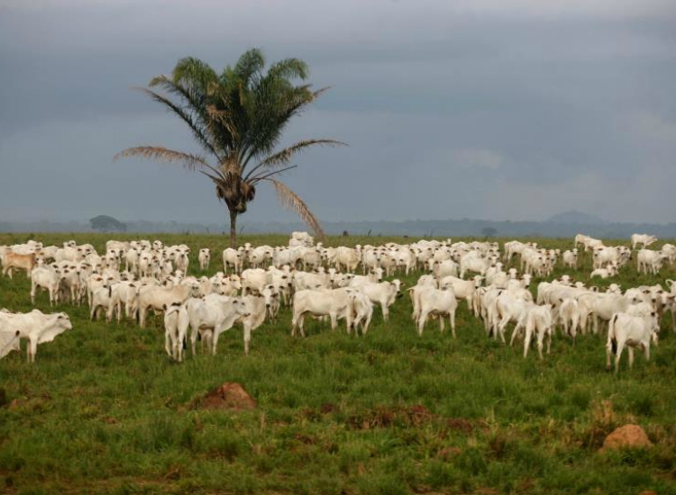

Suspeito de Atropelar e Matar Assessora Jurídica no AC Alega Não Ter Visto a Vítima em Rio Branco, AC
Defesa afirma que suspeito não viu a vítima antes do impacto; caso ocorreu na saída de casa noturna em meio a confusão.
 Local do acidente em Rio Branco, AC.
Local do acidente em Rio Branco, AC.
O autônomo Diego Luiz Gois Passo, de 27 anos, suspeito de atropelar e matar a assessora jurídica do Tribunal de Justiça do Acre (TJ-AC), Juliana Chaar Marçal, de 36 anos, na madrugada do último sábado (21), alegou à sua defesa que não viu a vítima antes do impacto. O incidente ocorreu na saída de uma casa noturna em Rio Branco, em meio a uma confusão que envolveu disparos de arma de fogo.
De acordo com Felipe Muñoz, advogado de Diego, seu cliente não teve a intenção de atingir Juliana. O advogado afirma que Diego tentou retornar para prestar socorro após perceber o atropelamento, mas fugiu por medo da aglomeração e da possibilidade de ser baleado. "Nessa saída abrupta e repentina, infelizmente, acabou atingindo a moça e o rapaz. Não teve a intenção e não viu [as vítimas] porque se abaixou dentro do veículo para se proteger", argumentou Muñoz.
Imagens de câmeras de segurança mostram a caminhonete de Diego em alta velocidade, atingindo Juliana e o advogado Keldheky Maia da Silva na rua. A defesa ressalta que Diego percebeu o atropelamento e chegou a parar, mas o receio da multidão e da arma o fez seguir em frente. O advogado assegura que Diego está disposto a se apresentar e colaborar com as investigações, aguardando apenas a decisão judicial sobre um pedido para evitar a prisão.
Repercussão e Pedido de Justiça
A morte de Juliana Chaar gerou grande comoção e pedidos por justiça. A assessora jurídica, que havia ingressado no TJ-AC em fevereiro deste ano, era muito estimada em seu meio. Rodrigo Aiache, presidente da Ordem dos Advogados do Brasil - Seccional Acre, lamentou a perda, descrevendo Juliana como uma pessoa de grande valor e uma "pedra inestimável".
A Polícia Civil havia solicitado a prisão de Diego Luiz Gois Passo após analisar as imagens do atropelamento. O delegado Cristiano Bastos, da Delegacia de Homicídios e Proteção à Pessoa (DHPP), informou que, caso Diego não se apresentasse, seria considerado foragido. A investigação aponta que uma discussão generalizada precedeu o atropelamento. Juliana foi socorrida e levada ao Pronto-Socorro de Rio Branco, mas não resistiu aos ferimentos.
O advogado da família de Juliana, Vandré Prado, expressou a expectativa de que as provas e imagens do inquérito levem a uma resposta efetiva e à responsabilização dos culpados. "A morte da Juliana não é um impacto só para a família, ela é um impacto para toda a sociedade. Esperamos realmente que tudo seja muito bem esclarecido para que tenhamos pelo menos essa clareza de responsabilizar quem deve ser responsabilizado", afirmou Prado.
O Contexto do Incidente
O atropelamento fatal de Juliana Chaar ocorreu em meio a um cenário de confusão. Inicialmente, a polícia foi acionada por relatos de disparos em via pública, que teriam sido feitos pelo advogado Keldheky Maia da Silva. Keldheky foi preso em flagrante por porte ilegal de arma de fogo, mas liberado no domingo (22). A defesa dele nega que Keldheky tenha efetuado os tiros, alegando a ausência de provas concretas.
Testemunhas no local teriam afirmado à polícia que o atropelamento foi proposital. A caminhonete conduzida por Diego Luiz Gois Passo foi identificada como o veículo responsável pelo impacto que tirou a vida da assessora jurídica.
Diego, segundo seu advogado, é réu primário, possui bons antecedentes, residência fixa, e é trabalhador, prestando serviços a pecuaristas da região. Ele tem filhos pequenos e pais doentes.
A investigação prossegue para esclarecer todos os fatos e determinar as responsabilidades no caso que chocou a capital acreana.
 03/06/25
Mais de 300 áreas de Manaus sem água por manutenção elétrica
03/06/25
Mais de 300 áreas de Manaus sem água por manutenção elétrica
Manutenção elétrica afeta estações de tratamento e interrompe abastecimento de água.
 30/05/25
O "Rio Invisível" do Amazonas intriga cientistas
30/05/25
O "Rio Invisível" do Amazonas intriga cientistas
Pesquisadores investigam fluxo de águas subterrâneas sob a Bacia Amazônica.
 15/06/25
Oásis escondido no Tocantins: fervedouros do Jalapão
15/06/25
Oásis escondido no Tocantins: fervedouros do Jalapão
Descubra as águas cristalinas e fenômenos naturais únicos do Jalapão.
25/06/25 Com 23 projetos habilitados, Acre é um dos estados com maior participação no programa Rouanet da JuventudeEstado investe e colhe resultados para jovens das periferias com incentivo à cultura e educação.
 25/06/25 Tocantins é destaque mundial no combate à febre aftosaEstado se destaca na erradicação da doença e conquista mercados internacionais.
 20/06/25
Justiça garante passe livre estudantil no AM
20/06/25
Justiça garante passe livre estudantil no AM
Decisão beneficia milhares de estudantes da rede pública do Amazonas.
22/06/25
Motorista denunciada por homicídio culposo após atropelamento fatal em RR
Acidente em Boa Vista levanta debate sobre segurança no trânsito.